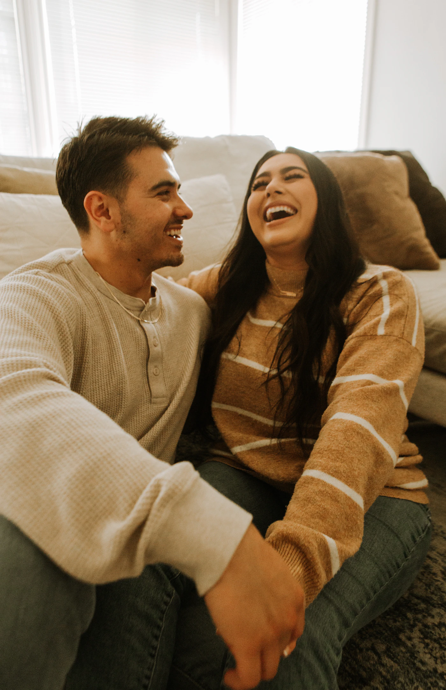

Psicoterapia para adultos e casais
Vocês não estão brigando por causa da louça.
A briga quase nunca é sobre o assunto. É sobre aquilo que ninguém está conseguindo dizer por baixo dele.
Casal · Individual · Terapia EMDR — presencial e online
Faça o teste
Qual destas frases mais se repete aí dentro de casa?
Escolha uma frase ao lado.
O que, quase sempre, se quer dizer:
A frase sai como ataque, mas nasce como pedido. O outro escuta o ataque, se defende, e o pedido se perde no caminho.
Vocês ainda se amam. Só não estão mais se encontrando.
Marque o que soa familiar.
Não é o amor que sustenta a relação. É o jeito de se relacionar que sustenta o amor.
E esse jeito segue sempre o mesmo roteiro. Veja como ele roda sozinho:
O problema não está em uma pessoa. Está no ciclo entre as duas. É nele que a Terapia Cognitivo-Comportamental trabalha: identificar os pensamentos automáticos e trocar a reação de sempre por uma nova.
Padrões são aprendidos. E tudo o que se aprende pode ser reaprendido.
Terapia de casal
Aqui ninguém vai decidir quem tem razão.
Terapia de casal não é tribunal. Eu não estou do lado de nenhum de vocês. Estou do lado da relação.
Primeira conversa
Vocês contam o que está acontecendo, sem julgamento. Eu escuto os dois lados com o mesmo cuidado.
O mapa do ciclo
Entendemos juntos o padrão de vocês: o que dispara a briga e o que cada um pensa, sente e faz.
Novas ferramentas
Técnicas práticas de comunicação para testar em casa entre as sessões.
Um novo jeito
A conversa difícil deixa de virar briga. E vocês voltam a se sentir do mesmo lado.
Terapia individual para adultos
E se o outro não quiser vir? Você pode começar sozinho.
Quando uma pessoa muda a forma de reagir, o ciclo inteiro já não roda do mesmo jeito. E nem tudo o que pesa é a relação. No atendimento individual, também cuido de:
Relacionamentos
Quando você escolhe, reage e se machuca sempre do mesmo jeito.
Autoestima
Quando a voz mais dura com você é a sua.
Ansiedade
Quando a cabeça não desliga e o corpo vive em alerta.
Fobias
Quando o medo é maior que o perigo e começa a decidir por você.
Terapia EMDR
Algumas lembranças não ficaram no passado. Ainda doem como se fosse agora.
O EMDR é uma abordagem reconhecida pela Organização Mundial da Saúde no tratamento de traumas. Com estímulos bilaterais, como o movimento dos olhos, ele ajuda o cérebro a reprocessar memórias que ficaram presas, para que possam ser lembradas sem a mesma carga de dor.
Pode ajudar em traumas e perdas, ansiedade, fobias e memórias que ainda machucam.
Quero saber se o EMDR é para mimSiga o ponto com os olhos. Estímulos bilaterais como este fazem parte do método.
Foto da Dra. Paola
Prazer, eu sou a Paola
Amor não é só sentimento. É uma decisão que se renova.
Sou psicóloga clínica e atendo adultos e casais. Trabalho com Terapia Cognitivo-Comportamental, terapia de casal e EMDR. E sou, sem exagero, apaixonada pelo que faço.
Meu trabalho é ajudar você a enxergar o que se repete, na relação ou dentro de você, e construir, com ferramentas concretas, um jeito novo de seguir.
CRP 00/00000 · Atendimento presencial e online
Antes da primeira sessão
Preciso estar em crise para procurar terapia?
Não. Muita gente chega para cuidar antes que o problema cresça. Quanto mais cedo, mais leve costuma ser o caminho.
E se a terapia mostrar que é melhor a gente se separar?
Meu papel não é salvar nem terminar relacionamentos. É ajudar vocês a decidirem com clareza, e não no meio de uma briga. Se a decisão for separar, a terapia ajuda a fazer isso com respeito, especialmente quando há filhos.
Quanto tempo dura o processo?
Depende de cada história. A TCC e o EMDR são abordagens focadas e com objetivos claros, então você acompanha a evolução ao longo do caminho. Conversamos sobre isso logo no começo.
Como é uma sessão de EMDR?
Antes de tudo, avaliamos juntos se o EMDR é indicado para o seu caso e preparamos o terreno. Nas sessões, você acessa uma lembrança difícil enquanto acompanha estímulos bilaterais, sempre no seu ritmo e sem perder o controle. Você não precisa contar detalhes que não quiser.
Você atende crianças ou adolescentes?
Não. Meu atendimento é para adultos, individualmente, e para casais.
O atendimento online funciona?
Funciona, e é ótimo para quem tem rotina corrida ou, no caso de casais, mora em cidades diferentes. Também atendo presencialmente.
O que eu falar fica entre nós?
Sim. Todo o atendimento segue o Código de Ética do Psicólogo e é protegido por sigilo profissional.

A conversa que você está adiando pode começar aqui.
Me mande uma mensagem. Sem compromisso: a gente conversa, você tira suas dúvidas e decide se faz sentido.
Agendar minha primeira conversaResposta em até 24h úteis